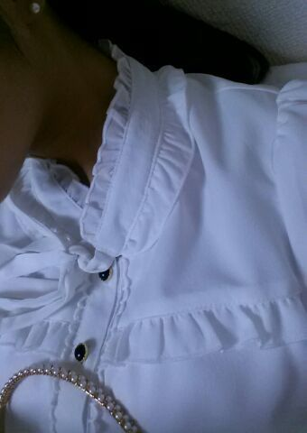
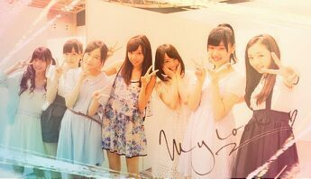

おはよーございます＼(*ω*)／キラキラ
Rotty☆です！！
横浜 個別握手会では
いつもより 清楚系のファッションで
行きました♪
白ブラウスに 紺色スカート。
珍しくカチューシャをして
全体的に地味だな？と思ったから
靴を明るくしました\(*´∨`*)/
白のブラウスも
わりと最近好きでして...
近くに寄ると
デザインがわかるよ(・ω・)♪
それと、ピアスとカチューシャは
白で同じ物をそろえたよ 。
見えるかな？？

実は Rottyレーンで
最後に来てくださった方の前でね
「歌ってぇ？」って言われたから
Rotty 目の前で歌っちゃいます\(〃ω〃)/
はは。
ってのをやっております。
前々から言ってたんだけど
実際に握手会レーンのブースの中で
ファンの方を目の前にして
歌ったのは ついこないだの
横浜握手会からです(*´ω`*)
ちょっとでも 来てくださる方が
楽しんで帰ってもらえると
嬉ちぃです =・∨・=
２期生ちゃんとっ, キラキラ〜

らんぜ,みおな,あやね,まいちゅん,
きぃちゃん,じゅんな,
そして手前はしに rotty .
今日も１日頑張りましょうね のし ♪